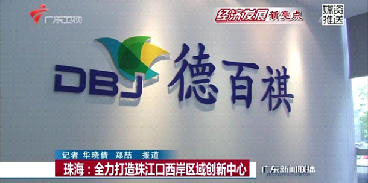

发布日期：2016-05-17
2016年5月，高新区南方软件园企业交流会第二站“走进南方软件园高新技术企业”——珠海德百祺科技有限公司圆满举行。广东创我、飞企互联、西默电气等25名园企领导及南方软件园领导出席该会议并听取德百祺发展与创新汇报。
查看全文2016园企交流第二站“走进南方软件园高新技术企业”——珠海德百祺科技有限公司，于5月17日下午圆满举行。本次活动邀请到广东创我科技柴满董事长、飞企互联史玉洁董事长、西默电气郑克林总经理、任驰光电李亚总经理、比邻客李双柱总经理、全视通信息林三朝总经理、宏桥高科罗灵总经理、赛米控电子刘艳明先生、南方软件园张乃平副总经理等25名园区企业领导出席。
会上，由德百祺杨春帆总经理主持会议，详细向与会人员介绍了德百祺的企业背景、技术突破和产业前景等。杨春帆总经理在会议中着重介绍了德百祺于2015年参与国家北斗系统“羲和计划”和国家“十三五”导航与位置服务技术的规划工作。并阐述利用自主研发的紧耦合无线电理论与技术，可极大提高室内外1米无缝实时导航定位能力，攻克北斗终端产品面临的技术难点。杨总还表示，目前珠海德百祺科技有限公司正牵头，希望联合多家定位导航领域知名单位申报2016年国家重点研发计划“地球观测与导航”、“公共安全风险防控与应急技术装备”两项专项项目，通过发挥公司技术与产品优势，向社会提供优质服务。
近日，珠海德百祺科技有限公司更是被广东新闻联播作为珠海打造珠江口西岸区域创新中心的领头企业进行采访与报道。
会议后半程，由杨总主持互动交流环节，对参会企业的踊跃提问发言做出逐一回答，企业家们对德百祺的技术及应用非常感兴趣，因为北斗定位市场产业化的前景广阔，结合各企业自身业务，现场就综合体、停车场等救援疏散领域、仓库物流管理领域、无人驾驶精准车道导航、海洋地震监测、智慧医养监护等领域的应用进行了探讨。杨总最后还表示未来德百祺将继续致力于行业技术的不断创新和进步，发扬“尊重人才、追求卓越、持续创新、实现共赢”的价值观，积极迎接挑战。同时，也感谢园区提供了这个交流平台，可以跟各企业大咖碰撞出思想的火花，希望日后能与园区企业有更为密切的交流与合作。